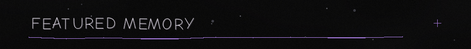
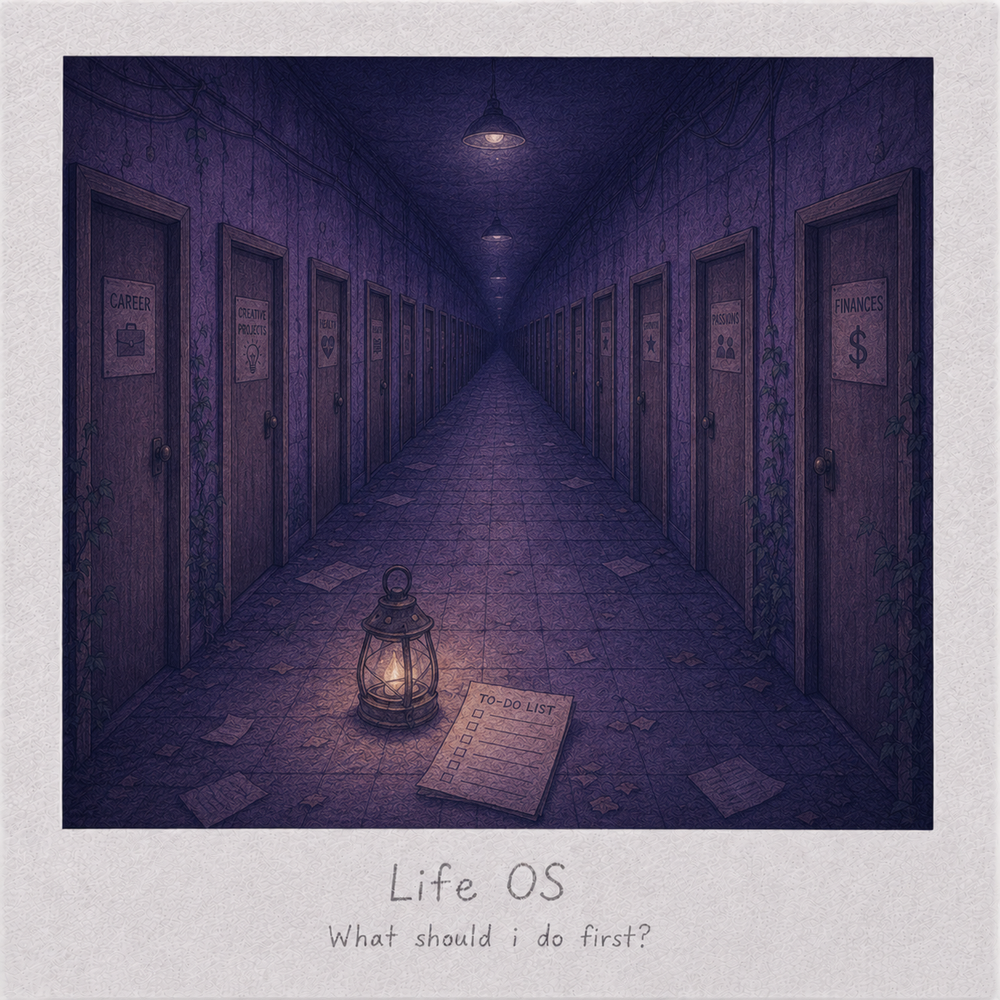
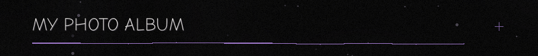
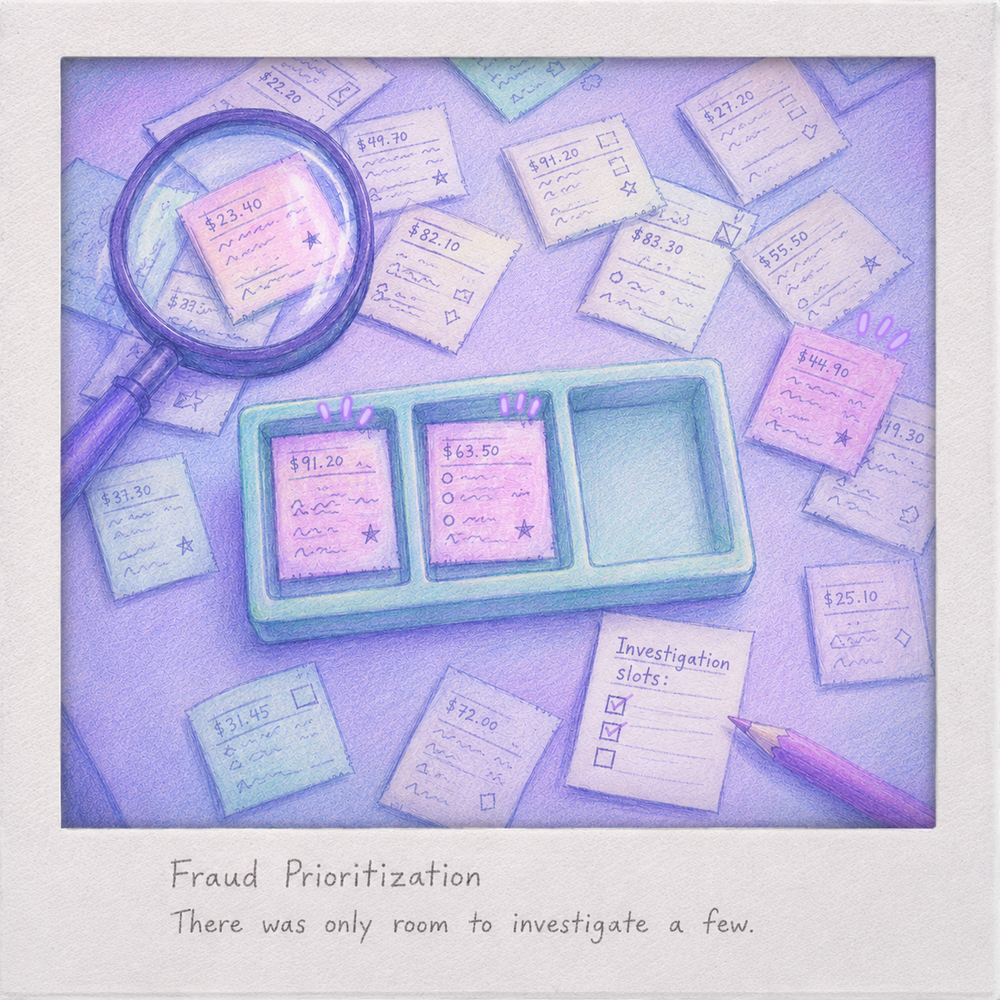
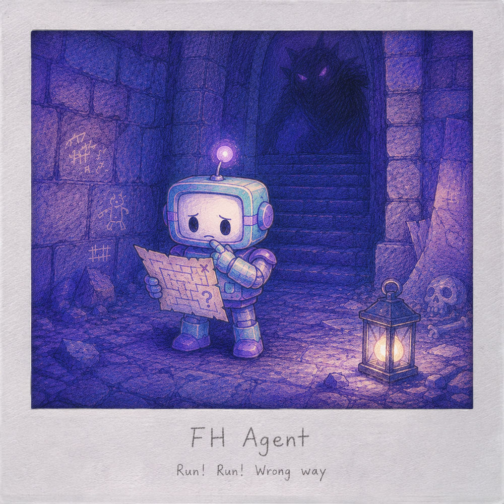
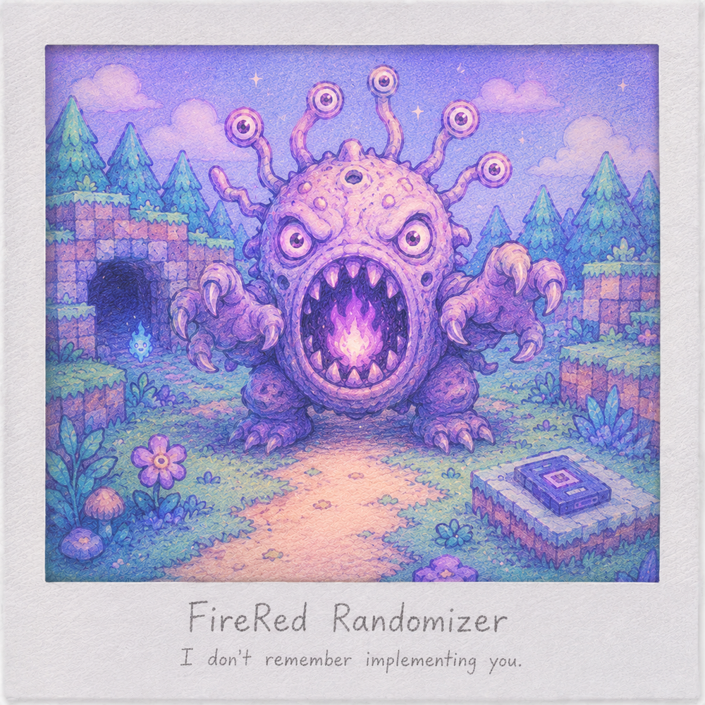
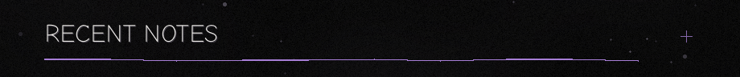
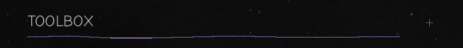
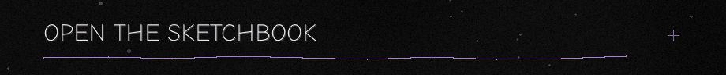

FEATURED · PHOTO ALBUM · NOW · RECENT NOTES · TOOLBOX · SKETCHBOOK

|
 |
FEATURED MEMORY / 01 Life OS
A personal planning and second-brain application created to reduce decision overload across study, work and personal projects. The corridor captures the moment before the system existed: every option felt important, but none felt like the obvious first step. WEB APPLICATION · PERSONAL PLANNING · SECOND BRAIN |

Fraud Prioritization — There was only room to investigate a few.
|
 |
MEMORY 01 / ACTIVE MASTER'S THESIS Fraud Prioritization
A research project on ranking credit-card transactions when investigation capacity is limited. The photograph captures the central constraint: many potentially relevant cases, but only a few available review slots. PYTHON · LEARNING TO RANK · FRAUD DETECTION |
Behind the photograph
The limited tray represents a fixed investigation budget. The surrounding receipts represent the larger candidate pool, where fraud relevance and potential financial impact do not always point to the same cases.
The experimental repository evaluates budget-conditioned ranking approaches while keeping probability estimation, ranking scores and impact proxies conceptually separate. It places strong emphasis on provenance, verification and reproducibility.
Repository: Private
Life OS — What should I do first?
|
MEMORY 02 / ACTIVE PRIVATE PROJECT Life OS
A personal planning and second-brain application created to reduce decision overload across study, work and personal projects. The corridor shows the moment before the system existed: every door looked important, but none looked like the obvious first step. WEB APPLICATION · PERSONAL PLANNING · SECOND BRAIN |
Behind the photograph
The doors stand for competing obligations, projects and interests. The scene intentionally offers no highlighted solution: it represents the decision paralysis that motivated the application.
Life OS brings daily planning, tasks, projects, goals, reviews, education, work, coding, health and personal areas into one controlled system.
Less interface. More control.
Repository: Private
FH Agent — Run! Run! Wrong way.
|
 |
MEMORY 03 / ACTIVE PRIVATE EXPERIMENT FH Agent
An autonomous agent architecture designed to perceive, remember and navigate a difficult RPG without hidden game knowledge. The robot is still studying the map while the dungeon has already introduced a more immediate problem. PYTHON · AGENT ARCHITECTURE · LOCAL LLM · SAFETY |
Behind the photograph
The map represents autonomous planning from incomplete evidence. The creature behind the robot represents the consequences of incorrect perception, delayed decisions and unsafe action.
The architecture separates perception, evidence, memory, planning and safe execution. Early milestones deliberately focus on observation, logging, no-spoiler boundaries and controlled actions before adding long-running autonomy or reinforcement learning.
Repository: Private
FireRed Randomizer — I don't remember implementing you.
|
MEMORY 04 / ACTIVE PRIVATE WORKSPACE FireRed Randomizer
A documented workspace for combining a heavily modified FireRed-based game with a modern randomizer and supporting tools. The encounter represents a familiar debugging moment: something unexpected appears, and now the implementation has to explain why. JAVA · GAME MODDING · COMPATIBILITY ENGINEERING · TESTING |
 |
Behind the photograph
The creature is not a specific game character. It stands for unexpected combinations, visual regressions and edge cases that appear when old game systems meet expanded data, newer mechanics and randomized rules.
The workspace coordinates reproducible builds, tool versions, compatibility work and targeted runtime checks for a FireRed-based Gen 9 setup. ROMs and other protected artifacts remain outside version control.
Related public repository:
Universal Pokémon Randomizer FVX
CURRENT FOCUS / JULY 2026
|
RESEARCH Master's thesisFinalizing verification, packaging and the presentation pipeline. Making every result reproducible and defensible. |
PERSONAL SYSTEMS Life OSRefining planning, reward systems and long-term structure. Building the system I originally needed for myself. |
|
AGENT SYSTEMS FH AgentHardening safe input, dry runs and controlled live execution. Teaching the agent to observe before it acts. |
GAME TOOLING FireRed RandomizerCompatibility audits, runtime evidence and edge-case policy work. Finding the bugs that only exist after everything finally boots. |

LATEST / FRAUD PRIORITIZATION
Added coverage and packaging gates.
The repository can now verify more of itself before trusting the results.
LATEST / LIFE OS
Added shop items with atomic redemption.
A small reward mechanic became another system that needed rules.
LATEST / FH AGENT
Hardened single-directional tap smoke validation.
Even the smallest action needs evidence before it becomes autonomous.
LATEST / FIRERED RANDOMIZER
Approved the 29-slot TM/HM item-ball policy.
Compatibility work eventually becomes archaeology with test cases.

DRAWER 01 / DATA AND MACHINE LEARNING
Python · pandas · scikit-learn · Jupyter
DRAWER 02 / SOFTWARE AND SYSTEMS
SQL · Java · Git · GitHub Actions
DRAWER 03 / PROCESS AND ARCHITECTURE
Camunda · BPMN · Agent workflows · Testing · Documentation-driven development

Open the sketchbook
WORK IN PROGRESS
- A custom activity visualization
- Better diagrams for research and architecture
- Small agent-memory prototypes
- Profile animation experiments
NOT READY FOR A REPOSITORY
- Design fragments
- Small utilities
- Ideas that still need a reason to exist
Last updated: July 2026
The typing animation is provided by Readme Typing SVG .